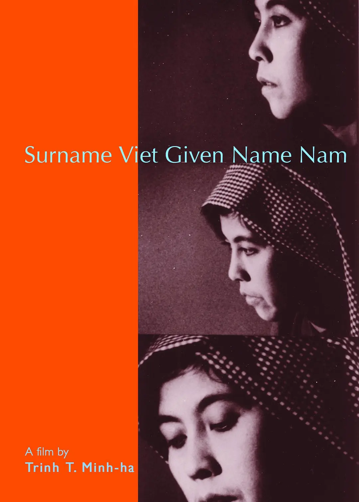

《姓越名南》(Surname Viet Given Name Nam)
剧情简介：
- 《姓越名南》（1989年）标题来源于越南女性在回答男性追求者时说自己嫁给“姓越名南”之人。跟着五位受访女性的娓娓诉说，观众逐渐进入到越南社会变迁下的女性角色改变之中，感受到在传统伦理教条束缚下的女性的生活与命运，进而思考女性、身份认同、文化与国家等话题，同时略窥越南历史与现实的某些方面。当电影进展到后半部分，观众愕然发现这五位当代女性实际并非生活在越南，前面的受访是由导演所设计的角色演绎出她所提供的文本与翻译。有趣的是，后面恢复了“真实身份”接受采访的几位女性似乎反而无法直抒胸臆，谈话之间有所保留，因而真实与虚构、“局内”与“局外”人的界限模糊了起来，成为了相互交叉、难以分辨的存在。
短评：
- 1.第一个镜头引导我们去注意女性的手部动作，她们将划船的动作融入舞蹈，手臂到指尖依次摆动，衣带像涟漪散开，同时我们听到水声。船和手的符号贯穿全篇，劳动时的手，言语时的手，牺牲时的手。在借助影像回归女性身体的同时，我们也被置于诸多复杂且令人不安的历史时刻、电影时刻之中，在那里女性一方面被塑造成国族寓言的非人符号，被迫扮演女儿、妻子、母亲，但另一方面她们也在主动搬演自己的历史角色。郑明河在挑战、试验不同系统之间的可转译性，演员时而是文本的载体时而又是拥有具身性的发声者，这使得这部影片既可以被阅读，同时也可以被播放。
- 2.说真的，这电影就是需要这么长，就是需要观众耐着性子去听那些女人们说话，让她们慢慢悠悠地说完整段，没有剪切，也不容许打断；让观众的目光只能落在这些历尽男权社会剥削的女人们的容颜，看她们从domestic life (housework/sex)中抽离出来的身体重置于无法辨识的灰白。